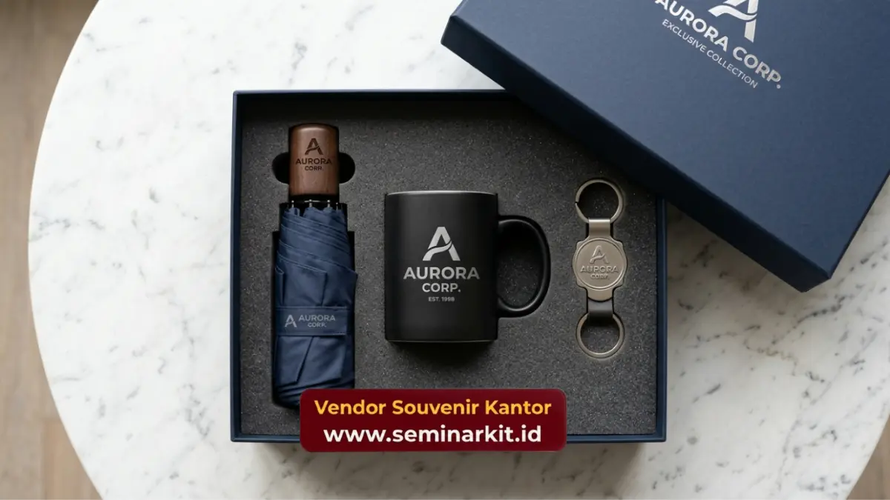

Merchandise karyawan adalah barang bermerek logo perusahaan yang dibagikan kepada tim internal untuk memperkuat identitas brand dan loyalitas kerja.
Barang ini efektif untuk onboarding, apresiasi kinerja, dan momen perayaan perusahaan.
Pemesanan merchandise karyawan custom logo kini dapat dilakukan secara praktis melalui vendorsouvenirkantor.web.id.
- Merchandise karyawan berfungsi ganda sebagai alat branding internal dan bentuk apresiasi tim.
- Jenis paling diminati meliputi tumbler, tas kerja, tote bag, notebook, dan paket welcome kit.
- Kualitas bahan dan presisi cetak logo menentukan daya tahan kesan brand di mata karyawan.
- Pemesanan custom logo idealnya direncanakan jauh sebelum tanggal distribusi agar proses produksi berjalan lancar.
- Perusahaan yang konsisten memberi merchandise cenderung memiliki keterikatan tim yang lebih kuat terhadap budaya kerja.
Apa Itu Merchandise Karyawan dan Mengapa Perusahaan Membutuhkannya
Merchandise karyawan adalah kategori barang bermerek yang dirancang khusus untuk didistribusikan secara internal kepada staf, bukan untuk klien eksternal.
Perusahaan membutuhkannya karena barang ini menjadi sarana visual yang mengingatkan karyawan pada identitas dan nilai perusahaan setiap hari.
Berbeda dengan souvenir untuk klien yang menekankan kesan pertama, merchandise karyawan lebih berorientasi pada penguatan budaya kerja jangka panjang. Barang seperti seragam, tumbler, atau tas kerja dipakai berulang kali dalam aktivitas harian, sehingga logo perusahaan hadir secara konsisten dalam rutinitas karyawan maupun lingkungan sosialnya di luar kantor.
Selain fungsi branding, merchandise karyawan juga berperan sebagai alat komunikasi non-verbal yang menegaskan bahwa perusahaan menghargai kontribusi timnya. Efek psikologis ini penting terutama pada organisasi dengan jumlah karyawan besar, di mana interaksi personal antara manajemen dan staf tidak selalu bisa dilakukan secara intensif.
Kapan Perusahaan Sebaiknya Membagikan Merchandise Karyawan
Momen paling umum untuk distribusi merchandise karyawan adalah proses onboarding karyawan baru, perayaan hari jadi perusahaan, penghargaan kinerja tahunan, dan acara gathering atau outing tim. Setiap momen memiliki tujuan komunikasi yang berbeda meski sama-sama memperkuat citra brand.
Pada momen onboarding, merchandise berfungsi sebagai simbol penyambutan yang membuat karyawan baru merasa menjadi bagian dari organisasi sejak hari pertama. Sementara pada momen apresiasi kinerja, merchandise menjadi bentuk pengakuan tanpa harus selalu berupa insentif finansial.
Perusahaan juga kerap membagikan merchandise karyawan pada momen peluncuran produk atau rebranding internal. Dengan tujuan menyamakan pemahaman tim terhadap identitas baru perusahaan sebelum dikomunikasikan ke publik.
Jenis Merchandise Karyawan yang Paling Efektif untuk Branding
Jenis merchandise karyawan yang paling efektif adalah barang fungsional yang digunakan setiap hari, seperti tumbler, tas kerja, notebook, dan kaos polo berlogo. Barang fungsional memiliki tingkat retensi penggunaan lebih tinggi dibanding barang dekoratif semata.
Selain barang fungsional harian, paket welcome kit yang berisi kombinasi beberapa item sekaligus juga banyak diminati perusahaan karena memberikan kesan lebih komprehensif kepada penerima. Paket ini biasanya mencakup tumbler, notebook, pulpen, dan tote bag dalam satu kemasan branded.
Untuk perusahaan dengan anggaran lebih fleksibel, merchandise premium seperti jaket, ransel laptop, atau power bank custom logo dapat menjadi pilihan untuk momen penghargaan khusus, karena nilai fungsional dan daya tahannya yang lebih tinggi dibanding barang promosi standar.

Bagaimana Kualitas Bahan Memengaruhi Kesan Brand pada Merchandise Karyawan
Kualitas bahan menentukan berapa lama merchandise karyawan tetap digunakan dan berapa lama pula logo perusahaan terus terlihat oleh penerima maupun lingkungan sekitarnya. Bahan yang cepat rusak justru dapat menimbulkan kesan kurang baik terhadap citra perusahaan.
Pemilihan teknik cetak logo, seperti bordir, sablon, ukir laser, atau emboss, juga memengaruhi ketahanan visual identitas brand pada produk. Teknik ukir laser dan bordir umumnya bertahan lebih lama dibanding sablon konvensional, terutama pada barang yang sering tercuci atau bergesekan.
Perusahaan disarankan mempertimbangkan kombinasi antara daya tahan bahan dan kesesuaian teknik cetak dengan jenis material produk, agar hasil akhir tetap presisi dan profesional saat diterima karyawan.
Faktor yang Perlu Dipertimbangkan Sebelum Memesan Merchandise Karyawan
Sebelum memesan merchandise karyawan, perusahaan perlu mempertimbangkan jumlah penerima, anggaran per unit, tenggat waktu distribusi, serta relevansi jenis barang dengan kebutuhan harian karyawan. Kombinasi keempat faktor ini menentukan efektivitas program merchandise secara keseluruhan.
Estimasi waktu produksi juga menjadi pertimbangan penting, khususnya untuk pesanan dalam jumlah besar dengan proses custom logo yang membutuhkan tahapan desain, approval, dan produksi. Perencanaan yang matang mencegah keterlambatan distribusi pada momen penting seperti gathering tahunan.
Relevansi desain logo dengan identitas visual perusahaan turut memengaruhi persepsi profesionalisme merchandise. Logo yang dicetak dengan proporsi dan warna yang tepat akan memberikan kesan lebih rapi dibanding logo yang asal ditempel tanpa penyesuaian tata letak.
Kesalahan Umum dalam Program Merchandise Karyawan
Kesalahan paling umum adalah memilih barang generik tanpa mempertimbangkan relevansi dengan kebutuhan harian karyawan. Sehingga barang tersebut jarang digunakan. Merchandise yang tidak terpakai justru mengurangi nilai investasi branding perusahaan.
Kesalahan lain adalah mengabaikan kualitas cetak logo demi menekan biaya produksi, yang berakibat pada tampilan logo pudar atau retak dalam waktu singkat. Kondisi ini dapat menurunkan kesan profesional perusahaan di mata karyawan maupun lingkungan sosialnya.
Ketiadaan perencanaan waktu pemesanan yang matang juga sering menjadi kendala, terutama menjelang momen penting seperti akhir tahun. Ketika volume pemesanan merchandise korporat meningkat signifikan dan berpotensi memperpanjang waktu produksi vendor.
Bagaimana Cara Memesan Merchandise Karyawan Custom Logo
Cara memesan merchandise karyawan custom logo dapat dilakukan dengan menghubungi vendorsouvenirkantor.web.id, menentukan jenis dan jumlah barang, mengirimkan file logo perusahaan, lalu melanjutkan proses produksi sesuai kesepakatan desain. Alur ini dirancang agar tim HR maupun procurement tidak perlu mengurus produksi secara mandiri.
Tim vendorsouvenirkantor.web.id membantu menyesuaikan pilihan bahan, teknik cetak, dan kemasan sesuai kebutuhan serta anggaran perusahaan, sehingga hasil akhir tetap konsisten dengan identitas brand tanpa mengorbankan efisiensi waktu.
Jika perusahaan Anda sedang menyiapkan program apresiasi tim, onboarding karyawan baru, atau merchandise untuk momen korporat lainnya. Kunjungi vendorsouvenirkantor.web.id untuk mendapatkan konsultasi pemesanan merchandise karyawan custom logo sesuai kebutuhan perusahaan Anda.
Merchandise karyawan custom logo adalah investasi jangka panjang untuk memperkuat budaya kerja dan identitas brand perusahaan. Pemilihan jenis barang yang fungsional, bahan berkualitas, serta perencanaan waktu pemesanan yang matang akan menentukan efektivitas program ini.
Untuk memulai program merchandise karyawan perusahaan Anda, kunjungi vendorsouvenirkantor.web.id dan konsultasikan kebutuhan Anda sekarang.

Banner promosi: klik gambar untuk langsung terhubung ke WhatsApp tim sales.